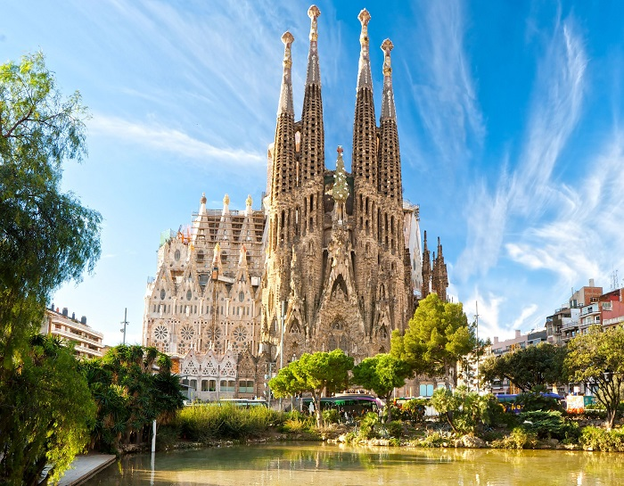
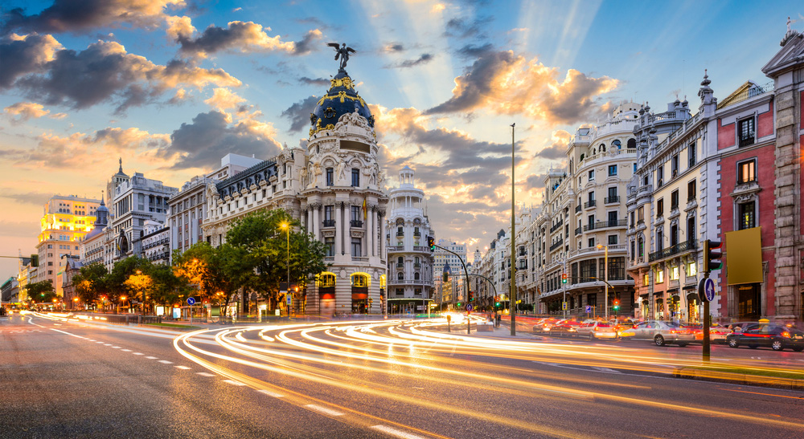
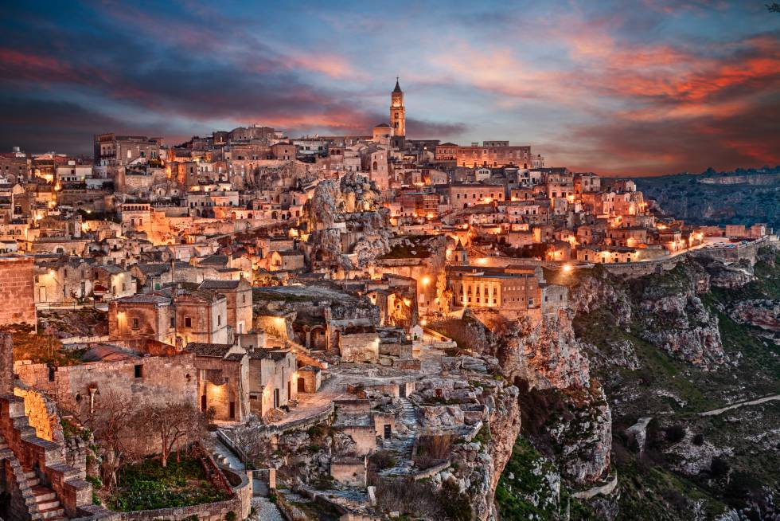
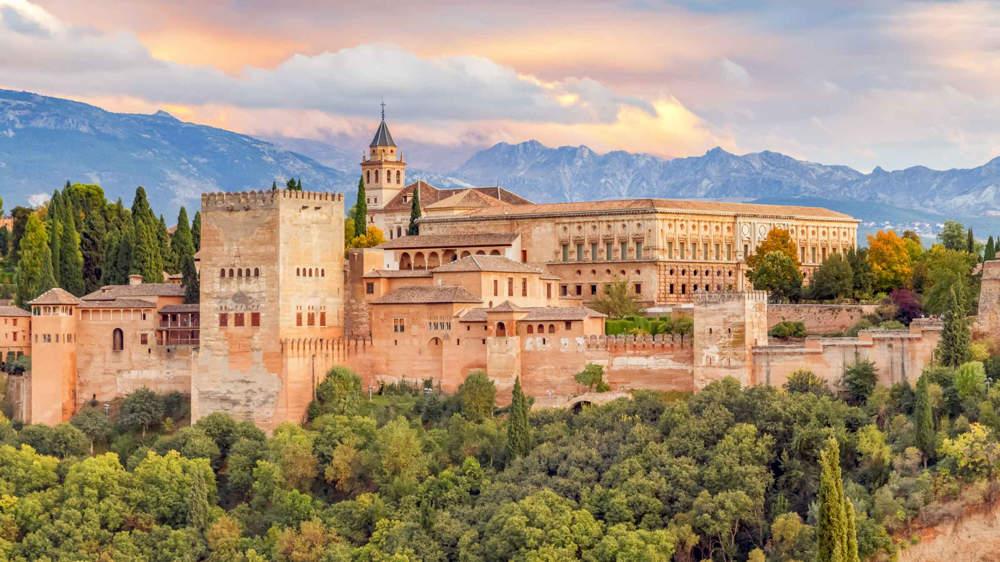

Barcelona, la capital cosmopolita de la region de Cataluña en España, es conocida por su arte y arquitectura. La fantastica iglesia de la Sagrada Familia y otros hitos modernistas diseñados por Antoni Gaudi adornan la ciudad. El Museo Picasso y la Fundación Joan Miro muestran el arte moderno de los artistas que dan origen a sus nombres. El Museo de Historia de Barcelona (MUHBA) incluye varios sitios arqueologicos romanos.

Barcelona es una ciudad que debes visitar alguna vez en la vida, por su imponente belleza arquitectonica marcada por el modernismo y Antonio Gaudi, por sus increibles pulmones verdes y parques, su gran agenda de ocio, la playa, y una exquisita oferta de la mejor cocina local y gastronomia española.
Hay miles de motivos para viajar a la Ciudad Condal, ya que siendo la segunda mas importante de España, es conocida por albergar grandes eventos deportivos, ferias internacionales y musicales, por tener un puerto que de salida a la mayoria de los cruceros por el Mediterraneo, pero sobre todo, por ofrecer multitud de rincones que conocer, incluso desde el mar con los paseos en barco de Barcelona Boat Tours.
2. Madrid
Madrid es la capital central de España con elegantes bulevares y amplios parques muy cuidados, como el Buen Retiro. Es famosa por sus ricas colecciones de arte europeo, con obras de Goya, Velazquez y otros maestros españoles en el Museo del Prado. El corazon del antiguo Madrid de los Habsburgo es la Plaza Mayor bordeada de porticos y cerca se encuentra el Palacio Real y la Armeria, que exhiben arsenales historicos.

En el año 2012 Madrid fue la trigesimo primera ciudad mas visitada del mundo por turistas internacionales con 4,1 millones de turistas y la segunda de España tras Barcelona. Es ademas sede de la Organizacion Mundial del Turismo y de la Feria Internacional del Turismo
3. sevilla
Sevilla es un municipio y una ciudad de España, capital de la provincia homonima y de Andalucia. Contaba con 691 395 habitantes en 2020, por lo que es la ciudad mas poblada de Andalucia, la cuarta de España despues de Madrid, Barcelona y Valencia y la 32va de la Union Europea.

Sevilla es una ciudad que deja huella y que muchos coinciden en definir como especial. Puede que sea por la grandiosidad de sus monumentos. Quiza por el encanto de barrios populares como Triana.
Es posible que se deba al aroma a jazmin de sus plazas o a la musica de guitarra española que se escucha en sus calles. Hay quien argumenta que es la tradicion de sus fiestas y muchos estan convencidos de que sus tapas son las autenticas responsables.
4. Granada
Granada es una ciudad en la region de Andalucia en el sur de España, en la ladera de las montañas de la Sierra Nevada. Es famosa por sus grandes ejemplos de arquitectura medieval que datan de la ocupacion de los moros, en particular, la Alhambra. Esta extensa fortaleza sobre una colina incluye palacios reales, patios y piscinas reflectantes de la dinastia Nazari y fuentes y huertos en los jardines del Generalife.

Si bien Granada es una ciudad de casi 250.000 habitantes, la zona donde vas a concentrar tu visita de turismo se extiende entre dos colinas.
Por un lado, la colina donde se asienta la Alhambra y el palacio del Generalife, y por otro, frente a ella, la ladera donde se encuentra el antiguo barrio arabe del Albaicin, asi como el del Sacromonte.
5. Mallorca
Mallorca es una de las Islas Baleares de España en el Mediterraneo. Es conocida por los balnearios en la playa, las caletas protegidas, las montañas de caliza y las ruinas romanas y moriscas. La capital, Palma, tiene vida nocturna, el palacio real morisco de La Almudaina y la Catedral de Santa Maria del siglo XIII. Entre las villas de piedra se incluyen Pollensa, con sus galerias de arte y su festival de musica, y Fornalutx en la ladera, rodeada de plantaciones de naranjas.
En medio del mar Mediterraneo nos encontramos esta maravillosa isla que lo tiene todo. Ademas de sus magnificas playas y de su sol, Mallorca posee unos preciosos pueblos agricolas de interior plagados de historia y la herencia patrimonial de romanos, arabes o cristianos. Una gastronomia personal que combina con acierto productos de la tierra y el mar. Un lugar de ensueño donde practicar deportes nauticos, senderismo o cicloturismo. Una isla para gozar durante todo el año.